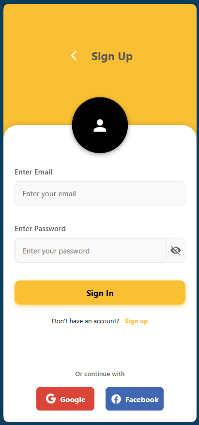
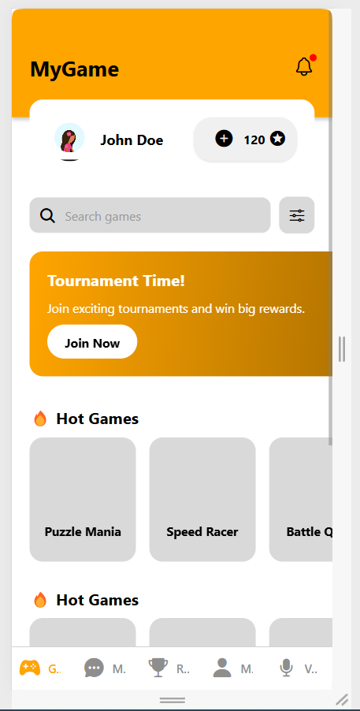
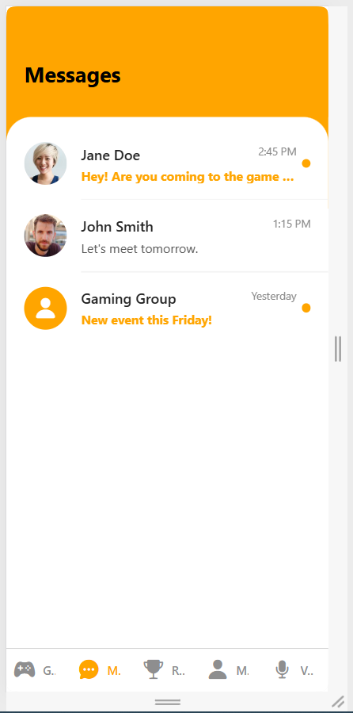
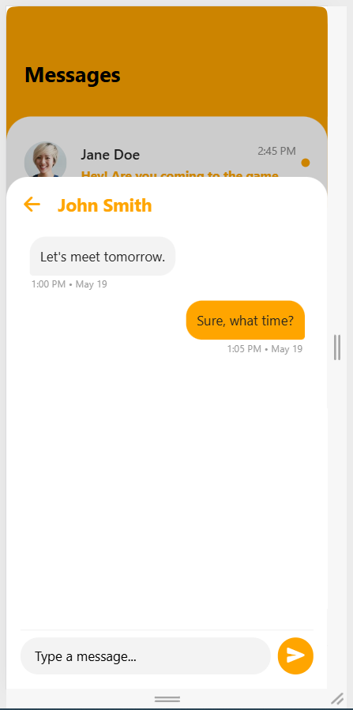
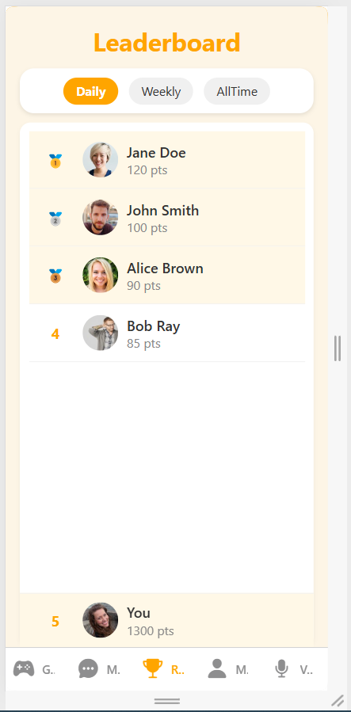
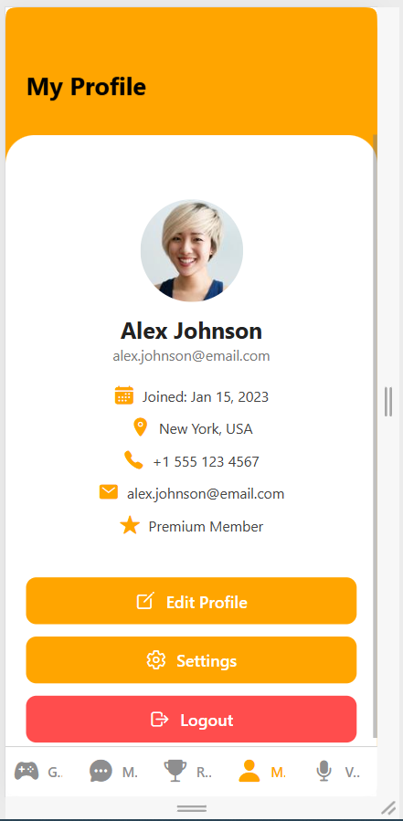
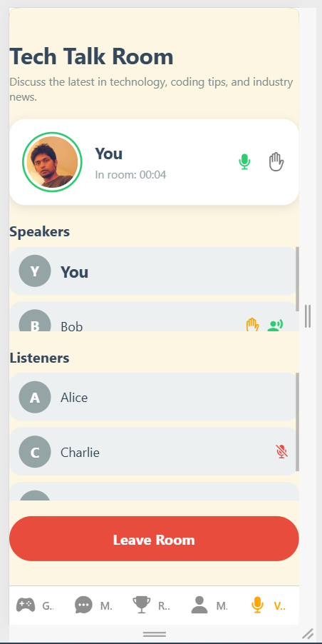

PLAY
Game discovery is the entry point, not the whole product.


A gaming product is not only a list of games; it also has identity, competition, communication and community state.
The supplied screens connect discovery with tournament participation, messaging, rankings, profile information and chat-room states.





This section translates the supplied interface into the sequence of responsibilities visible in the build record.
Game discovery is the entry point, not the whole product.
Tournament and leaderboard surfaces make progression visible.
Messages and chat-room views treat community as part of the main navigation.
A build record that connects the visible interface to the job the product is trying to do.
These are the actual project images supplied for the archive. They are shown without fabricated performance claims or fake client outcomes.